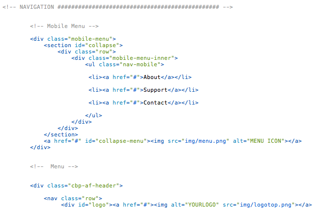

Created: 09/18/2013
By: Supview
Email: hello@iamsupview.be
Thank you for purchasing my theme. If you have any questions that are beyond the scope of this help file, please feel free to email via my user page contact form here. Thanks so much!
Table of Contents
A) HTML Structure - top
This theme is a one page portfolio. All of the information within the main content area is nested within a div with an id of "primaryContent". The general template structure is the same throughout the template. Here is the general structure looks like.

As you can see, you can also edit the width of each columns and make display the work as you like! It's based on the Gumby Framework grid, you can see more informations here : Grid of Gumby Framework.
B) CSS Files and Structure - top
There's always a table of content like this one
/* 01. Key Frames & Font Face 02. Generals Settings 03. Header Section Settings 04. Container Section Settings 05. Testimonial Section Settings 06. Join us Section Settings 07. Sign In Section Settings 08. Footer Section Settings 09. Mobile Menu Settings 10. Media Queries for Mobile Settings 11. Media Queries for iPad/Tablet Settings */
I'm using three CSS files in this theme.
The first file named style.css contains all of the specific stylings for the page. The file is separated into sections like this exemple:
/* 03. HEADER SECTION ================================================== */ some code /* 04. CONTAINER SECTION ================================================== */ some code /* 05. SIGN UP SECTION ================================================== */ some code /* 06. FOOTER SECTION ================================================== */ some code
The second file named gumby.css is the framework that i'm using. you have nothing to touch there. It's for the row and column.
If you would like to edit a specific section of the site, simply find the appropriate label in the CSS file, and then scroll down until you find the appropriate style that needs to be edited.
The tirth file named component.css is the stylesheet for the social icon, the flexslider generals settings (for the testimonials).
C) JavaScript - top
This theme imports Nine Javascript files.
- jQuery 1.9.1
- jQuery Modernizr
- main.js
- plugins.js
- jquery.scrollto.js
- classie.js
- cbpScroller.js
- jquery.parallax-1.1.3.js
- jquery.scrollto.js
- jQuery is a Javascript library that greatly reduces the amount of code that you must write.
- Modernizr make an altenative for others navigators if they don't accept some code.
- main.js contain little script for making the always top navigation, smooth scrolling etc. This is where you setup most the js library.
- plugins.js is used for some plugins like the flickering text for validate the form
- jquery.scrollto.js is used for smooth scrolling
- classie.js is used for reduced height of the navigation when you scroll down.
- cbpScroller.js is used for the side effect
- jquery.parallax-1.1.3.js is used for the header background. You can also add some others parallax backgkround in the main.js on any section.
- jquery.scrollto.js is used for smooth scrolling
D) Newsletter Form - top
For using it with your E-Mail just replace the code below here on line 3 of the from_sender.php .
$to = "hello@yourmail.com";
E) Sources and Credits - top
I've used the following images, icons or other files as listed.
- Gumby Framework - http://www.gumbyframework.com
- On Scroll Effect Layout from Codrops - http://tympanus.net/Blueprints/OnScrollEffectLayout/
- Apple Products from Pixeden - http://www.pixeden.com/
- Video Hosting from wistia - http://wistia.com/
- Icon Hover Effects from Tympanus - http://tympanus.net/Development/IconHoverEffects/
Once again, thank you so much for purchasing this theme. As I said at the beginning, I'd be glad to help you if you have any questions relating to this theme. No guarantees, but I'll do my best to assist. If you have a more general question relating to the themes on ThemeForest, you might consider visiting the forums and asking your question in the "Item Discussion" section.